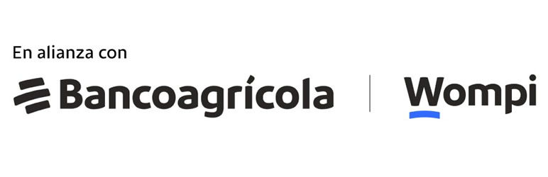

Integra la pasarela de pago Wompi El Salvador con el comercio electrónico de Odoo 18 usando la arquitectura nativa de proveedores de pago. Al pagar, el cliente es enviado a la pantalla segura de Wompi mediante un enlace de pago, y el pedido se confirma automáticamente en Odoo cuando Wompi aprueba la transacción (vía webhook firmado y validación de retorno).
Generación automática del enlace de pago Wompi desde el checkout y redirección segura del cliente a la interfaz oficial de Wompi.
Verificación de la firma HMAC-SHA256 tanto en el retorno del cliente como en el webhook, con respaldo opcional por API si un proxy elimina la cabecera de hash.
Tarjeta de crédito/débito, puntos y cuotas Banco Agrícola, Bitcoin y QuickPay, según las capacidades habilitadas en tu cuenta Wompi.
El pedido se confirma solo cuando Wompi aprueba el pago, y se registran las referencias de la transacción dentro de Odoo.
Sincroniza desde el endpoint /Aplicativo las cuotas disponibles y el
soporte de puntos de tu comercio.
Título del pago, imagen, descripción, correos de notificación, límites de uso del enlace y logs de depuración configurables.
payment y website_sale instalados.Nota: por contener código Python, este módulo está pensado para instalaciones on-premise u Odoo.sh; no es compatible con Odoo Online (SaaS).
El soporte de configuración y la corrección de errores del módulo están disponibles para los clientes con licencia válida. Escríbenos a ph03001gnu@yahoo.com.
© 2026 Carlos Palacios · Distribuido bajo Odoo Proprietary License v1.0 (OPL-1).